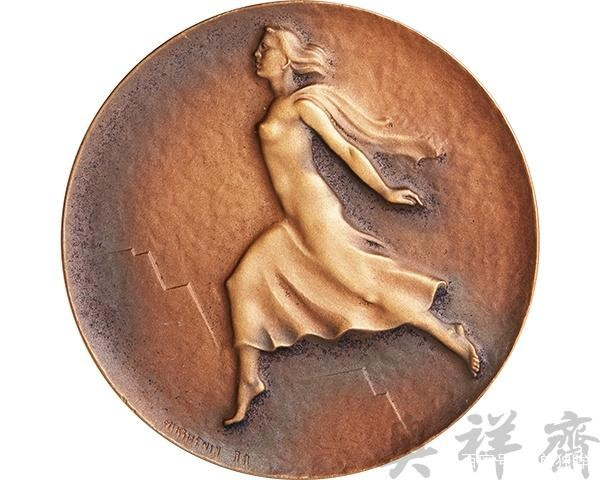

2020年第四届河北地域特色文化线上展览“华夏文化，有“冀”可寻”|冰雪文化篇（一）
春观花，冬赏雪，自古以来就是中国人的生活情趣。如今，冰天雪地成为美丽中国的冬季画卷，当冰雪与河北放在一起又会碰撞出怎样的火花呢，让我们拭目以待！
冰雪文化
(一) 冰雪河北
河北省地处中纬度欧亚大陆东岸，西环抱首都北京，东与天津毗连并紧傍渤海，东南部、南部衔山东、河南两省，西倚太行山与山西为邻，西北部、北部与内蒙古交界，东北部与辽宁接壤，总面积18.88万平方千米。河北省地处华北平原，东临渤海、内环京津，西为太行山，北为燕山，燕山以北为张北高原，是中国唯一兼有高原、山地、丘陵、平原、湖泊和海滨的省份。地跨海河、滦河两大水系。河北省属于温带半湿润半干旱大陆性季风气候，四季分明。冬季寒冷干燥，雨雪稀少;春季冷暖多变、干旱多风;夏季炎热潮湿、雨量集中;秋季风和日丽、凉爽少雨。 （选自冰雪文化研究馆）
（二）冰雪文化的历史来源与简介
1.袁安困雪
《后汉书·袁安传》里说，有一年，洛阳大雪，人们皆除雪，外出乞食，独有袁安门前积雪如故。洛阳县令按户查看，以为袁安已经冻饿而死，便让人扫除积雪，进屋察看。只见袁安直挺挺地躺着，差役问他为何不出门。袁安说，天下大雪，人人皆饿，我不应去打扰别人。洛阳令甚为感动，后举袁安为孝廉。袁安先后做了阴平县长和任城县令。后人把宁可困寒而死也不愿乞求他人的有气节的文人，称作“袁安困雪”（或“袁安高卧”“袁安节”）。
2.卧冰求鲤
《搜神记》里说，晋朝的王祥，早年丧母。继母不喜欢他，常在其父面前数说王祥的不是，还让王祥进行艰苦的劳作。父母生病时，王祥为照顾他们忙得连衣带都来不及解。一年冬天，继母生病想吃鲤鱼，但天寒河水冰冻，无法捕捉，王祥便赤身卧于冰上，忽然冰面裂开，从冰缝中跃出两条鲤鱼。王祥喜极，用鱼供奉继母……他的举动，在十里乡村传为佳话，被后世奉为“二十四孝”之一。
（三）冰雪文化的传统民俗
1、满族萨满教雪祭
雪祭是满族萨满教古老的祭祀大典之一，直至民国初年，满族富、吴等姓仍举行雪祭典礼。满族萨满教雪祭的主要性质是敬雪、拜雪和娱雪。其中娱雪包括走雪迷宫、闯雪阵、跳冰雪滑板、堆雪人、塑冰雕等。满族萨满教雪祭以物化的形式、隆重的礼仪展示了满族及其先世对冰雪的崇拜，具有浓郁的北方文化特色。其中的娱雪活动，蕴含和保留了满族古老的冰雪运动因素。
2、轱辘冰
清代满族妇女中流行着一种习俗——“轱辘冰”，又叫“滚冰”“走白冰”。每年正月十六晚上，妇女们三五成群，手执灯笼，嬉笑着来到旷野。她们在冰雪上左右翻滚，口里诵唱着：“轱辘冰轱辘冰，腰不痛腿不疼”“轱辘冰轱辘冰，身上轻一轻”。接着，在冰雪上嬉戏取乐。该活动俗称为“脱晦气”，又叫“走百病”（“走白冰”的谐音），认为“轱辘冰”能滚走疾病和晦气，带来健康和运气。
（四）冰雪文化的现状
“刚刚兴起，方兴未艾，前景光明” 国内的冰雪文化现状可以用这三个词来形容。比起有着悠久的冰雪旅游历史的欧洲等国，我国的冰雪文化虽然在东北三省已经有一定的历史和规模，但是全面进入大众视野和商业化运作，尤其是冰雪旅游的开展，还是近年的事情。随着社会科技文化高速发展，在近几年，冰雪文化已作为一种广泛的社会文化现象，预测冰雪文化的发展将有如下趋势：
1.填补冬季旅游的淡季空白。
冬季旅游一向是我国会展旅游业的淡季，北方市场尤其如此。冰雪旅游的出现，无疑为冷清的冬季旅游市场填补了一块空白。在美国、法国、瑞士等地，冬季滑雪旅游已形成巨大的产业。据统计，在欧美等雪资源富集的国家，冰雪旅游成为重点发展的会展产业。
2.内容向丰富多彩的趋势发展
大众性质的比赛活动会明显增多，将滑雪的娱乐休闲活动与比赛、竞技相结合，激起人们的更大的滑雪兴趣。延伸出更多适于大众的滑雪产品。
3.人群向更广消费阶层中发展
1996年以前，涉足冰雪运动的人群仅限于专业运动员或滑雪爱好者。1996年后，我国的普通消费者也有了参加这项活动的机会，每到春节旺季，必须提前预定房间，否则在滑雪场将很难找到住处，如此看来，现代滑雪运动在人们生活中影响甚大。
4.向产业化方向发展
滑雪运动本身涉及旅游、交通、餐饮、酒店等诸多领域。一座现代规模滑雪场的运营，会拉动其他产业形成一个相应独立的经济生活“滑雪实体区域”，多元化的复合型旅游产业提高食宿消费水平。把冰雪艺术、冰雪体育、冰雪娱乐、冰雪文化、冰雪旅游、冰雪经贸、冰雪研修、冰雪灯展、冰雪客栈等融为一体，推动经济的发展甚至是文化素质和意识上的进步。
（五）冰雪节
1. 中国 . 山西冰雪文化节
2006年，山西旅游创汇16420．78万美元，国内旅游收入414．75亿元人民币，旅游总收入为428．39亿元人民币。海外游客573711人次，国内游客7517．04万人次。日趋成熟的地域经济状况为山西省开展冰雪文化活动打下了一定的基础。
2006年12月29日，首届中国・山西冰雪文化节“雪舞龙城，魅力小店”成为山西省内首次举行的冰雪文化节。“冰天雪地，热身奥运”的理念贯穿于此次冰雪文化节始末。
活动期间组织雪上竞技、冰灯冰雕展、冰雪文化高峰论坛、冰雪婚礼、魅力小店摄影大赛等多项主题活动。
2. 哈尔滨国际冰雪节
中国第一个以冰雪为载体的国际冰雪文化节，创办于1985年，初名哈尔滨冰雪节，2001年第17届提升为中国·哈尔滨国际冰雪节。至今，成功举办了24届。
哈尔滨国际冰雪节是世界上活动时间最长的冰雪节，它只有开幕式——每年的1月5日，没有闭幕式，最初规定为期一个月，事实上前一年年底节庆活动便已开始，一直持续到2月底冰雪活动结束为止，期间包含了新年、春节、元宵节、滑雪节四个重要的节庆活动。
冰雪节中又包含冰雪电影艺术节和泼雪节，可谓节中有节，节中套节，喜上加喜，多喜盈门。
3. 石家庄市首届校园冰雪文化节
石家庄市首届校园冰雪文化节和首届校园冰雪运动会的启动仪式于2019年11月7日在石家庄二中润德学校举行。
“冰雪文化、乐享校园”为本次运动会主题，围绕“认知冰雪、描绘冰雪、创作冰雪、乐享冰雪”四大版块开展13项校园冰雪文化系列活动。
（选自IF-Team）
（六）冰雪风光
①金岭山长城
中国长城中最具有代表性的金山岭长城的冬景别有洞天，作为保存最完好的一段明长城，即使是冬天，也有值得欣赏的景色，冬日的长城增加一丝沧桑感，像是诉说着一段段历史故事。雪中的长城景色更美妙，站在长城赏，就如同置身童话世界里一般，冰雪覆盖后的长城多了几分纯净和唯美，在从古至今400多年的岁月里，秀美的长城终于展示和之前不一样的一面。
②沕沕水
早在明清时代，为平山“八大胜景”之一，素享“沕水瀑布天上降”的盛誉。作为红色旅游胜地令人敬仰向往，坐落其中的沕沕水发电厂，是解放战争时期，军民携手建立的我党我军第一座水力发电厂，不仅添补了解放区的电力空白，且出色地履行了向革命圣地西柏坡和兵工厂供电的神圣使命，点亮了"新中国从这里走来"的第一盏明灯，为毛主席、党中央指挥三大战役、解放全中国立下不朽功勋。景区内多级瀑布，“如白练之经于天，白虹之饮于渊”，堪称“燕赵第一瀑”。

③承德避暑山庄
承德避暑山庄又名“承德离宫”，是清代皇帝夏天避暑和处理政务的场所。避暑山庄始建于1703年，历经清康熙、雍正、乾隆三朝，耗时89年建成。避暑山庄以朴素淡雅的山村野趣为格调，取自然山水之本色，吸收江南塞北之风光，成为中国现存占地最大的古代帝王宫苑。避暑山庄分宫殿区、湖泊区、平原区、山峦区四大部分，整个山庄东南多水，西北多山，是中国自然地貌的缩影，是中国园林史上一个辉煌的里程碑，是中国古典园林艺术的杰作，是中国古典园林之最高范例。冬日里的避暑山庄也美得如同人间仙境。
④御道口牧场
冬日的御道口牧场草甸草原与附近林海都被大雪覆盖，终日白雪皑皑，银装素裹，一派北国风光。被雪覆盖的森林枝桠，增添了一丝艺术气息。御道口牧场地处内蒙古高原东南边缘，地理位置优越，”北京——承德——围场一——塞罕坝国家森林公园——御道口牧场——丰宁——北京"桠牧场主要由天然林、天然草场、耕地、水域、淡水湖、优质矿泉及大小河流等组成，是围场县北部坝上地区奇特的自然景观。
2020年第四届“华夏文化，有冀可寻”河北地域特色文化线上展览|冰雪文化篇（二）
（七）冬奥会
视频（选自IF-Team）
河北是我国夏季体育运动大省，随着2022年北京冬奥申办成功，河北省冰雪民俗文化活动也进入快速发展时期。冰雪民俗文化活动是以冰雪体育项目为基础，以推动冰雪民俗文化活动发展为目的，制定的相关方案和措施。在发展过程中结合当地的冰雪资源现状，制定出具体的实施方案，使整个区域内开展冰雪民俗文化活动时能够顺利、有序地进行下去，进而建立大众冰雪体育发展模式，丰富百姓的体育文化体验。
自北京携手张家口成功申办2022年冬奥会以来，河北省加大了冰雪运动普及力度，按照“3亿人参与冰雪运动”的目标，制定了《河北省冬季运动发展规划》，提出到“2022年全省参与冰雪运动人次达到3000万以上”的奋斗目标。自2017年以来，河北省启动“大众冰雪季”系列活动，组织开展了40多项群众性冰雪赛事及趣味活动，全省参与滑雪、滑冰人次达到450万左右，营造了浓厚的冬奥氛围。
这是张家口成为冬奥城市所带来的良机,也是河北体育对自身资源优势和发展模式的重新梳理和思考。从竞技层面看，河北体育这些年对冰雪运动已经有些陌生，但追溯历史并非全无底蕴。1960年全国冰上运动会，河北就是包括黑龙江、吉林、北京、辽宁、宁夏、新疆、山西、陕西等在内的11家参赛的省级单位之一。黄河以北，冰雪运动也有过广阔的天地。而再度将冰雪运动纳入发展视野之后，社会化、大众化将成为河北体育新的焦点。河北北部是开展冰雪运动的“富矿”，在冬季，古老长城延绵处，皑皑白雪形成了诸多优质雪场和冰场，而京津地区大众需求的勃发，也让河北的冰雪运动有了更坚实的依托。张家口能成为冬奥之城，与此不无关系。

冰雪名片
①气候优势
张家口一年四季分明，冬季寒冷而漫长；春季干燥多风沙；夏季炎热短促降水集中；秋季晴朗冷暖适中。坝上地区光资源丰富，昼夜温差大；雨热同季，生长季节气候爽凉；高温高湿炎热天气少。
②地域优势
张家口位于河北省西北部，是一座有着悠久历史和灿烂文化的北方名城，自古即为兵防重镇和进入蒙俄及东欧市场的陆路商埠，是奠定中华民族融合统一的重要圣地，有优越的地理位置和区位优势。张家口距离北京有200公里左右，自然景观很丰富，是京郊游的主要目的地之一。
③雪场建设优势
这些年张家口大力发展冰雪运动，特别是崇礼冰雪运动开展得较好，无论是冰雪的设施条件还是冰雪的质量，都达到了国际水准。崇礼天然滑雪期可达120天，存雪期长达140多天。此外，崇礼山坡坡度陡缓适中，可供旅游滑雪和竞技滑雪的面积达300平方公里，被誉为华北地区最理想的滑雪地域。
④交通优势
张家口借助北京作为中国首都和全世界特大型城市的优势，给它带来了很大的市场，弥补了这方面的不足，北京的优势变成了张家口的优势。据冬奥会开幕式鸟巢车程不到一个小时，张家口距离北京不到200公里，2019年高铁通车后，时间不超过1个小时。交通方便，地理位置优越。
⑴张家口举办冬奥会的意义
首先，冬奥会在中国举办可以促进全民健身，带动3亿多民众参与冰雪运动。一直以来，冰雪运动被称为“高岭之花”，参与这项运动的仍是少数人群。我国 取得2022年冬奥会举办权，有助于冬季运动的发展，并激发3亿多国人参与其中，使更多的人认识和体会冬季户外运动的益处和乐趣，这对提高全民身体素质以及弘扬奥林匹克精神都有重要意义。
其次，冬奥会对推动中西文化交流融合、增强民族自信必将产生积极影响。奥林匹克运动会是全球性的体育盛会，它不仅为各国体育健儿提供了展示自我的竞 技场所，而且也为促进世界和平、增进相互了解、实现文化交融、传递文明友谊搭建了最好的学习交流平台。我国通过承办冬奥会，可以进一步振奋民族精神，宣传 中华灿烂文明和优秀文化，展示大国实力和精神风貌，增强民族凝聚力和自豪感。
此外，筹办冬奥会有助于生态环境的改善。节能减排、生态保护、环境治理等已经成为当前的重要任务。2013年，北京市出台了5年投资1300亿美元 的“清洁空气行动计划”，我省同样也在生态环境治理上作出了最大努力。相信随着2022年冬奥会筹办和全社会环保意识的逐步提高，生态环境质量和水平必将 得到大幅改善。
⑵冬奥会带来的“机遇”
北京携手张家口承办冬奥会，将会进一步推进京冀两地特别是京张两市在各个领域的战略合作，真正使张家口融入首都发展经济圈。北京市与张家口市地域相邻，山水相连，随着京张高铁的建成通车，北京到张家口的时间将缩短为一个小时以内，这将大大加快京张两市在地域上的同城化建设，实现两地在经济、文化、教育、科技、生态、金融、信息交流等各个方面的深入对接。张家口可以借力北京这个国际大都市，在更广领域、更深层次、更高水平上优势互补、协同共进，实现本地经济社会的跨越式发展。
乘冬奥会东风，张家口驶入经济社会全面发展的快车道。张家口协助北京承办冬奥会，必将带来前所未有的发展机遇和投资热潮，推动新一轮的改 革开放与招商引资，一大批技术高端、功能先进、配套齐备、绿色低碳的大项目好项目将落户张家口，一系列的基础设施建设、体育场馆建设、生态功能建设的启 动，会有效拉动相关产业提速发展，加快产业结构调整步伐，激活消费市场，增加就业岗位，加速城市现代化进程。
借冬奥会之势，张家口人民定将快速甩掉贫穷落后的帽子，踏上富裕殷实的坦途。张家口具有坝上地区得天独厚的生态文化旅游资源，有古人类文 化遗址、响铃寺、东土城等古迹名胜，有广袤的森林草原，有国际标准的滑雪场地。春可以踏青赏花，夏可以消炎避暑，秋可以采摘观景，冬可以溜冰滑雪。近年 来，“冰雪热”持续升温，带动了当地经济的发展，冬奥会的申办成功，必将给人们带来更多实惠、更高收入，加快建成全面小康社会的步伐。
（3）冬奥会对河北的影响
2022年北京冬奥会，是中国历史上第一次举办冬季奥运会，北京、张家口同为主办城市。申办冬奥会的成功，向全世界展示了北京举办国际体育赛事的实力和信心，标志着中国在世界体坛中迈出了更大一步，进一步赢得了国际社会的尊敬和信任。几代冰雪人几十年的愿望终于变成了现实。在兴奋的同时也感到了责任重大。冬奥会是一个非常重要的契机，能够更好地提高中国冰雪运动竞技水平，同时也能够最有力地普及群众冰雪运动。
作为2020年冬季奥运会主办地――张家口，迎接的不仅是挑战更是机遇。奥运会早已不是单纯的体育赛事，它更寓意着一个国家一个地区的综合实力。从成功申办冬奥会开始，世界将目光聚焦到中国，凝聚到张家口。为了更好的举办冬奥会，河北人民也必将竭尽所能，为世界呈现一份满意的答卷。同时，冬奥会将给张家口人民带来的不仅是巨大的经济空间，更是将大力促进河北地区的基础建设的设施，如交通、通讯、房地产、体育、旅游、文化、酒店、展览、新能源和环保等产业的发展。21世纪以来，河北地区以第二，三产业为支柱，高新技术产业以及现代服务业初现规模，呈良好上升势头。而面对河北特殊的经济产业结构，在经济发展的同时也对城市的环境、建设、形象、以及影响力等方面提出了新的要求。河北经济发展的硬约束和软环境都将制约其发展。这要求，河北在发展经济的同时要统筹兼顾，科学发展。首先要加强社会环境的监控与治理，加大对城市基础设施的建设；其次通过成功举办国际性的活动来扩大其影响力，提高城市的知名度和形象。面对全球经济的大环境，竞争无处不在，冬奥会作为国家性的赛事成功的影响了张家口，乃至河北地区的经济发展。
此次成功举办冬奥会，不仅给河北地区带来经济发展空间，更是为其产业结构优化带来了完美的契机。面对这千载难逢的机会，河北地区的经济发展结构将会得到调整和升级。河北地区作为华北地区的大省，作为中华文明的发祥地，张家口作为华北地区最大的天然滑雪场，更是被誉为“东方达沃斯”。冬奥会将促进环保产业和生态农业的快速发展，促进高新技术产业的发展，促进现代服务业的形成和发展。纵观历史，奥运会都将为主办城市第三产业旅游业服务业带来空前的推动力，而放眼未来，2022年冬奥会势必为张家口地区以及河北全省带来更大的机遇。主要在于河北张家口一直以来都十分注重旅游业的发展，更是将会把传统与现代文明，西方与东方文化相交融，为世界呈现出具有独特魅力的一届冬奥会，而这种巧妙融合势必将引起全球的目光，激发人们对张家口的兴趣，完美的促进河北地区的旅游业发展。与此同时，冬奥会必将成为张家口地区旅游业的一个长期素材，根据冬奥会拓展附属品，设计制作创新项目及产品，使张家口旅游成为潮流，成为时尚。再而作为全球性的体育赛事，全球各大媒体记者都争相报道这一历史性事件，顺势成为河北张家口一个大的宣传平台与媒介。成功的让世界人民认识河北，了解张家口。毫无疑问，河北张家口成功举办冬奥会将会为地区旅游业带来长达7年的持续发展力，而这样持续的高速增长一定可以使旅游业成为河北地区的经济支柱。
在冬奥会的大背景下，政府也将财政支出侧重于提升城市基础设施，企业投资者也将目光转移到保护生态环境的相关产业。作为冬奥会的主办地，也将加快当地冰雪产业的发展，加快催化产业增长点。进而伴随着冬奥会筹办工作的加快开展，将会出现大量的空白岗位，有效的解决了百万人民的就业问题。有效的缓解了当前中国大形势下，就业难得问题 。
这就是河北这个冰雪的城市，不仅有深厚的冰雪文化史，不仅有地理气候优势，更有冬日里如梦似幻的冰雪天地。而今，更是有能够代表中国硬实力的冰雪名片--北京冬奥会。让我们尽览燕赵之风。
(选自冰雪文化研究馆)
冬奥会冰雪赛事

奥运冠军的体育收藏，奥运收藏，冰雪收藏：

从以上内容可知，在历史的发展中，“冰雪文化”又延伸出“体育文化”的存在，它们有着密不可分的关系。
2022年冬奥会冰上项目：
短道速滑
速度滑冰
花样滑冰
冰球，冰壶等。
2022年冬奥会雪上项目：
俯式冰橇
自由式滑雪
单板滑雪
无舵雪橇等。
更有着高山滑雪、跳台滑雪、越野滑雪等高难度，富有挑战性的运动项目
冰雪体育用具：
1. Bobsleigh 雪车
根据乘坐人数，雪车分为单人座、2人座和4人座雪车，车长分别不得超过2.8m，3.2m和3.8m。雪车由玻璃纤维和钢制成，形同小舟，车首覆有流线型罩。车底前部是一对舵板，上与方向盘相接，车底后部为一对固定平行滑，车尾下部装有制动器。
比赛装备：
运动员必须穿着由未涂层纺织品制成的比赛服和全护式安全头盔参加比赛，在比赛服外部或下方不得附着任何空气动力学元件。运动员比赛鞋底部的鞋钉需分布均匀，呈刷型，鞋钉的最大直径不得大于1.5mm，鞋钉长度不得超过5mm，每只比赛鞋的鞋钉数量不得少于250颗。
2. Ice Hockey 滑雪服
用具：
安全头盔——防止互相撞击和磕碰冰面过程中伤害到头部，保护头部安全。
冰球服和护具——保护身体重要部位，防止撞伤、摔伤，或被冰球击伤。
手套——防止撞击受伤，球杆击打伤。
球杆——控制冰球的工具，依据人体的特点具有不同型号。
冰球鞋刀——冰球滑行最重要的器具，能够帮助运动员快速灵敏地在冰面上进行各种方向的进退和变向，保护脚部。
3. Skating boots冰鞋
用具：
冰鞋的冰刀分为三种。花样刀，球刀和跑刀。
冰鞋适用于速度滑冰（简称速滑），在滑冰运动中是历史最为悠久，开展最为广泛的项目
适用于速度滑冰的只有跑刀，是专业速滑运动员用的。所以在普通的冰场上，一般来说是看不到跑刀的。
花样刀是适用所有初上冰的人，包括想学花样滑冰和只是玩玩的人的最佳用刀，因为它有两个刃，相对来说比较稳。
冬奥梦，冰雪情。
一项运动的发展离不开文化的引领与支撑，进一步开发冰雪文化公共事业，树立冰雪文化品牌，打造特色冰雪文化产业链，实现冰雪经济可持续性发展是我们的发展目标
社会各界应抓住冬奥契机，打造冰雪文化知名品牌，搭建国内外冰雪文化交流平台，聚集培养冰雪文化人才，实现冰雪经济可持续性发展，促进深入挖掘更多冰雪文化内涵。
因为期待，所以欣喜。冬奥会这个符号，在我们心目中是中国的最强音，我们将一起梦想，一起兴奋，一起分享。
（选自IF-Team）
（八 ）冰灯与冰雕
冰灯
冰灯的起源
以前的人使用的都是油灯，而黑龙江流域的人冬季夜晚捕鱼，需要照明工具。可那时候的油灯没有灯罩，纸质灯罩在野外一吹就破了，很容易被灭掉，而那个时候也还没发明玻璃，更没有灯泡，因此人们就地取材，发明了冰灯。
冰灯的制作和发展
后来，人们把冰灯加以装饰和改良，在冻冰的水里加上了颜料、纸屑、碎木头之类的东西，结冰之后会在冰体内形成独特的颜色的花纹，每逢新春佳节和上元之夜，人们就会制作彩色的冰灯挂在家门口，以供人们观赏。
冰雕
冰雕的起源
冰雕有“冰工艺”之称，是一种以冰为主要材料来雕刻的艺术形式，源自于法国，初创的目的是为了增加食物的美丽与清爽。冰雕时温度和速度也需要考虑，以避免冰的融化。
在中国，东北是冰雕发展最好的地区，其中最有名的是哈尔滨冰雕展。由于东北严寒的气候，冰随手可得，因此雕刻的体积也变得越来越大，成为以冰建筑得名副其实的冰雕世界，如城墙，溜梯等。哈尔滨同时也是举办国际冰雕比赛的重要城市。
（选自IF-Team）
雪在每年的冬季都会如约而至，这个城市的故事在严寒的时节里也不会单调与寂寞。雪来的时候，带给我们欢乐和惊喜。其实对于浩瀚的生命来讲我们与雪一样都是过客。虽然我们每个人都行色匆匆，但是不要忘记如冰雪一样无声的释放自己的美好。那样，城市的春天就会在我们的滋润下变得更加充满生机与力量！
注：一切解释权归廊坊师范学院会展经济与管理专业所有